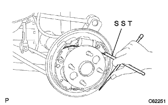
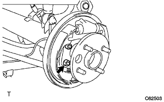
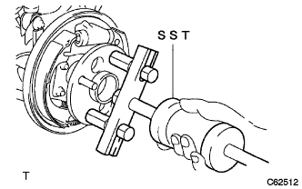
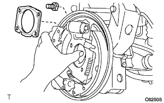
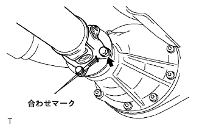
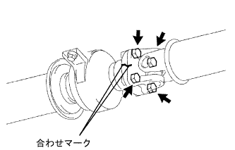
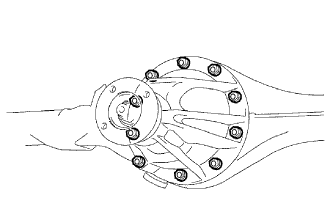

Differential Carrier ASSY RR (4WD) Remove |
| 1. Battery minor Starminal Cut off |
reference| 2. Remove the rear tire |
| 3. Differential oil removal |
Remove the oil rear axle housing film plug, rear axle housing drain plug and each gasket to remove the oil.
Attach a rear axle housing drain plug via a new gasket.
| 4. Speed sensor RR LH removed |
Remove the bolt and separate the speed sensor RR LH.
| 5. Speed sensor RR RH removed |
| 6. リヤブレーキ ドラム取りはずし（LH側） |
リヤブレーキドラムを取りはずす。
| 7. リヤブレーキ ドラム取りはずし（RH側） |
| 8. Parking brake shoe strat set LH removed |
|  |
Use SST to remove the strat set.
| 9. Parking brake shoe strat set RH is removed |
| 10. |
Remove the brake zeuling spring.
| 11. |
| 12. Remove the rear axle shaft (LH side) |
|  |
Remove the four nuts from the service hall and separate the bearing retainer OUT and bearing retainer gasket from the backing plate.
The bearing retainer OUT and the bearing retainer gasket are separated from the backing plate, and the backing plate is temporarily tightened with four nuts.
|  |
Use SST to remove the axle shaft.
| 13. Remove the rear axle shaft (RH side) |
| 14. Remove the rear axle housing end gasket removal (LH side) |
Remove the four temporary nuts from the backing plate.
Remove four bolts while supporting the backing plate.
|  |
Float the backing plate and remove the end gasket.
| 15. Remove the rear axle housing end gasket removal (RH side) |
| 16. Properachaft ASSY RR removed |
|  |
Attach the mark to the point in the figure, remove four bolts, washer and nuts, and separate the propeller shaft ASSY RR from the default flange.
|  |
Attach the mark to the point in the figure, remove the four bolts, washer and nuts each, and separate the interimide shaft asser from the propeller shaft ASSY RR.
| 17. Differential carrier ASSY RR is removed |
Supporting the rear dialy career ASSY with a jack.
|  |
Remove 10 nuts and spring washers, and remove the rear dialogical career ASSY.
| 18. Remove the rear dial carrier gasket removal |
Remove the rear dialable carrier gasket from the rear divisional career ASSY.